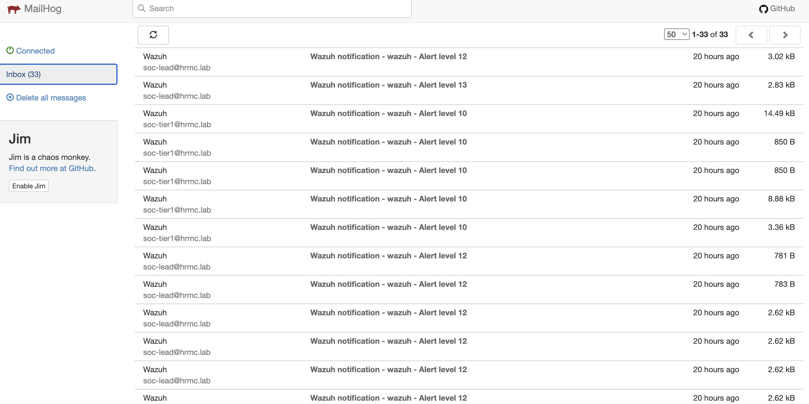
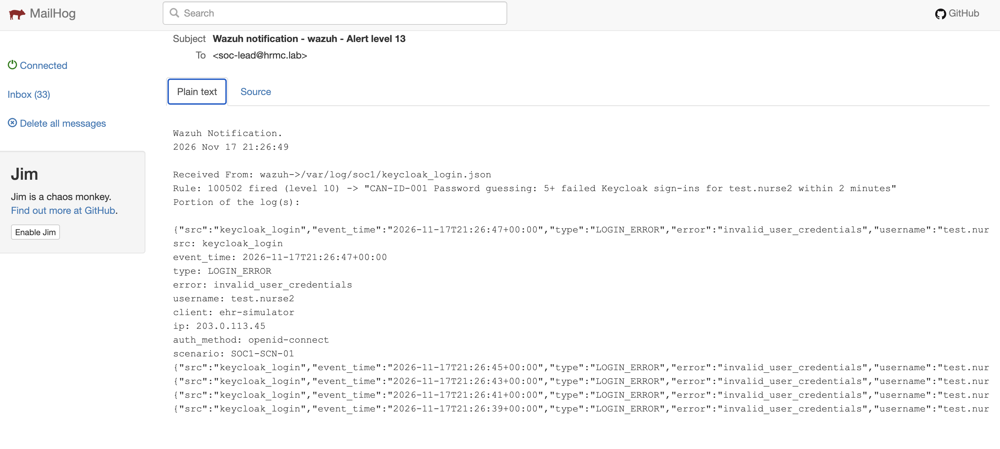

Source:
diagrams/siem_architecture.mmd| Prepared by: | Akhila Chennamaneni, IAM & GRC Analyst (author) |
| Organization: | HealthLine Regional Medical Center (HRMC), Care Access Navigator (CAN) capstone |
| Course: | Security Operations Center 1 (DAE 6-Month Cybersecurity, Cohort 2) |
| Rubric criterion: | Criterion 2: SIEM Implementation |
| Environment: | Wazuh 4.9.2 single-node SIEM (manager, indexer, dashboard) in Docker; MailHog test mailbox; capstone Keycloak and EHR logs |
| Date: | November 18, 2026 |
diagrams/siem_architecture.mmd| Component | Function and relationship |
|---|---|
| Log sources | Systems that produce events. Here: Keycloak sign-ins, Keycloak admin changes, EHR access audit (JSON files) and a Linux auth.log (syslog). |
| logcollector | Part of the Wazuh manager (or agent). Tails each configured file (<localfile>) and passes every new line on. |
| analysisd: decoders | Turn a raw line into named fields. The built-in JSON decoder gives username, ip, role, patient_id; the syslog decoders give srcip, dstuser. |
| analysisd: rules | A tree of rules evaluated on the decoded fields. A match produces an alert with a level (0–15), description, groups and MITRE ATT&CK IDs. Correlation rules remember earlier alerts. |
| alerts.json / alerts.log | The manager's alert output, the hand-off point to storage and to email. |
| maild | Sends email for alerts at or above the configured level, with extra routing per level. |
| Filebeat | Ships alerts from the manager to the indexer over TLS. |
| Wazuh indexer (OpenSearch) | Stores and indexes alerts so they can be searched in seconds. |
| Wazuh dashboard | The analyst's web interface: Threat Hunting, rule management, configuration, MITRE view. |
| Agents | Installed on endpoints (as on parrot-vm in IR1) to collect logs, file integrity and inventory and send them to the manager on port 1514. |
Template: name, purpose, data source, logic, threshold, output, false positives, response.
| Field | Rule 100502: CAN-ID-001 password guessing |
|---|---|
| Purpose | Detect someone guessing a user's password before they get in |
| Data source | Keycloak sign-in events (src = keycloak_login) |
| Logic | Child rule 100501 marks each LOGIN_ERROR. Rule 100502 fires when 100501 has matched 5 times for the same username within 120 seconds (frequency="5" timeframe="120", if_matched_sid 100501, same_field username). |
| Output | Level 10 alert, MITRE T1110.001, group correlation; emailed to Tier 1 |
| Known false positives | A user who forgot a new password; the lockout test account test.vendor1 |
| Response | Check source IP and whether a success followed (rule 100507); if yes, treat as account compromise |
<rule id="100502" level="10" frequency="5" timeframe="120"> <if_matched_sid>100501</if_matched_sid> <same_field>username</same_field> <description>CAN-ID-001 Password guessing: 5+ failed Keycloak sign-ins for $(username) within 2 minutes</description> <mitre><id>T1110.001</id></mitre> <group>authentication_failures,correlation,</group> </rule> <!-- second-stage correlation: success after the burst --> <rule id="100507" level="13" timeframe="300"> <if_sid>100506</if_sid> <!-- a successful sign-in --> <if_matched_sid>100502</if_matched_sid> <!-- that follows a password-guessing alert --> <same_field>username</same_field> <!-- for the same user, within 5 minutes --> <description>Possible account compromise: $(username) signed in from $(ip) after a password-guessing burst</description> </rule>
A third correlation rule, 100522, raises a level 12 alert when one user opens 15 or more patient records within 60 seconds (CAN-ID-007).
All three fired in the investigation scenario (section 3.5). Full rule file: wazuh_config/soc1_rules.xml.

| Source | Format / volume | Why it matters for security monitoring | Detections |
|---|---|---|---|
| Keycloak sign-in events | JSON, 192 events | Every success, failure, lockout and refusal at the identity provider. It is the first place password guessing, leaver sign-ins and unapproved app access show up. | 100501–100507 |
| Keycloak admin events | JSON, 231 events | Who changed roles, groups, users and authentication flows. Privilege changes are how attackers and insiders give themselves more access. | 100511 (53 alerts) |
| EHR access audit | JSON, 90 events | Which user opened which patient record. HIPAA requires this audit trail; it is the only source that shows ePHI actually being read. | 100521, 100522 |
| Linux auth.log (IR1 parrot-vm) | syslog, 615 lines | SSH logins, sudo, new users and groups on a server. Shows host-level misuse that the identity provider never sees. | Built-in 5402, 5715, 5718, 5901, 5902 |
<localfile> <log_format>json</log_format> <location>/var/log/soc1/keycloak_login.json</location> </localfile> <localfile> <log_format>json</log_format> <location>/var/log/soc1/keycloak_admin.json</location> </localfile> <localfile> <log_format>json</log_format> <location>/var/log/soc1/ehr_access.json</location> </localfile> <localfile> <log_format>syslog</log_format> <location>/var/log/soc1/auth.log</location> </localfile>
Configured in the manager's ossec.conf (excerpt in wazuh_config/ossec_soc1_excerpt.conf):
<global> <email_notification>yes</email_notification> <smtp_server>mailhog</smtp_server> <!-- local test mail server --> <email_from>wazuh-soc@hrmc.lab</email_from> <email_to>soc-tier1@hrmc.lab</email_to> <email_maxperhour>100</email_maxperhour> </global> <alerts> <log_alert_level>3</log_alert_level> <!-- store level 3+ --> <email_alert_level>10</email_alert_level> <!-- email level 10+ to Tier 1 --> </alerts> <email_alerts> <!-- escalation routing --> <email_to>soc-lead@hrmc.lab</email_to> <level>12</level> <do_not_delay /> </email_alerts>

